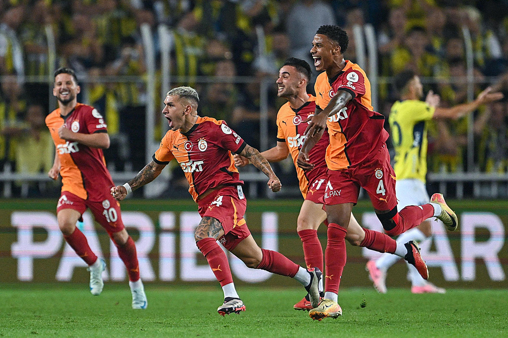

Project 2: Fun with Filters and Frequencies!
Alp Eren Ozdarendeli
Background
In this project, I focused on manipulating image frequencies to achieve various effects. I sharpened images by boosting high-frequency components, created hybrid images by combining high and low frequencies from different images, and blended images using Gaussian and Laplacian stacks.
Part 1: Fun with Filter
Part 1.1: Finite Difference Operator
In order to calculate partial derivatives, I used finite difference kernels. Dx kernel is created by np.array([[1, -1]]) and Dy kernel is created by np.array([[1], [-1]]. By convolving the image with these finite difference kernels, I have obtained the partial derivatives in horizontal and vertical directions. The gradient magnitude is calculated by taking the square root of the sum of squared partial derivatives in the x and y directions. This is essentially calculating the L2 norm of the gradient vector at each pixel. In order to binarize the gradient magnitude, I have chosen a threshold of 0.29 per pixel.

d_x

d_y

Gradient Magnitude

Binarized Gradient Magnitude
Part 1.2: Derivative of Gaussian (DoG) Filter
I have blurred the original image by doing convolution with a 2D Gaussian kernel, with sigma = 1 and kernel size 6. 2D Gaussian kernel is created by firstly creating a 1D Gaussian filter with cv2.getGaussianKernel() and doing outer product with its transpose. Then, I applied the same procedure from part 1.1 to get the partial derivatives and gradient magnitude of the blurred image.
The results with Gaussian filter are noticably smoother, having thicker edges even though the I used a significantly lower threshold, 0.066. Noise in the background of the image is less apparent with the Gaussian filter, and gradient magnitude is significantly lower.

Image with Gaussian Filter
Dx of Image with Gaussian Filter

Dy of Image with Gaussian Filter

Gradient Magnitude of Image with Gaussian Filter

Binarized Gradient Magnitude of Blurred Image
This time, I convolved with the derivative of Gaussian instead of convolving the image twice with partial derivatives and the Gaussian filter.
The results are visibly the same because of convolution operation's associativity property. I used the same threshold for the binary gradient magnitude and obtained the same edge image.

Dx of DoG

Dy of DoG

Gradient Magnitude of DoG
Binarized Gradient Magnitude of DoG
Part 2: Fun with Frequencies!
Part 2.1: Image "Sharpening
For this part, my goal is to sharpen images. In order to sharpen an image, I apply Gaussian filter to get the low frequencies of the image. When the low frequencies are substracted from the original image, I get the high frequencies of the image. By adding the high frequencies to the original image, original image can be sharpened. I combines these operations into a single convolution operation which can be formulized convolving each channel of the image with (1 + alpha) * unit_impulse - alpha * gauss_kernel where alpha is the coefficient of the sharpening.

Taj Mahal

Sharpened Taj Mahal, alpha = 1

Mustafa Kemal Ataturk

Sharpened Mustafa Kemal Ataturk, alpha = 1.2

Galatasaray players are celebrating defeating Fenerbahce

Sharpened Galatasaray players are celebrating defeating Fenerbahce, alpha = 2
For evaluation, I attempted to sharpen an image after blurring it. I observed that sharpening process was not able to sharpen the blurred image to its original quality, regardless of the value of the coefficient alpha. When an image is blurred, it becomes more noisy than the original and lose some of its details that even sharpening cannot recover.

Rams park

Blurred Rams Park

Sharpened version of Blurred Rams Park, alpha = 1.5
Part 2.2: Hybrid Images
For this part, my goal is to create hybrid images that can be interpreted differently from different distances. In order to do this, I capture low frequency and high frequency of different images by passing the images through a Gaussian filter. High frequencies are captured by subtracting the image passed through the filter from its original image. The hybrid image is the average of both filtered images. I used color to enhance the effect of combining the images.

Derek

Nutmeg
Dermeg? Nutrek? (kernel_size = 30, low_sigma = 7, high_sigma = 5)

Darwin

Chimp
Hybrid Darwin (kernel_size = 25, low_sigma = 4, high_sigma = 4)

Tan

Two-Face

Two-Tan (kernel_size = 25, low_sigma = 5, high_sigma = 4)
Two-Tan was my favorite result so far. Here is its frequency analysis with Fourier transformation:

Tan FFT after low-pass filter
Two-Face FFT after high-pass filter

Two-Tan FFT
For a failed one, I tried to make a hybrid of Gheorghe Hagi and Didier Drogba. Unfortunately, it wasn't very successful but I will use them again for another technique.

Gheorghe Hagi

Didier Drogba

Failed
Part 2.3: Gaussian and Laplacian Stacks
For this part, my goal is to blend images. In order to blend, I created Gaussian stacks and Laplacian stacks for the images. The Laplacian stacks are formed by substracting the consecutive images in their Gaussian stacks. The last level of the Laplacian stack is the last level of the Gaussian stack so the Laplacian and Gaussian stacks have the same number of levels.
Apple Gauss Stack
Apple Laplace Stack
Orange Gauss Stack
Orange Laplace Stack
Oraple
Part 2.4: Multiresolution Blending
In order to blend, I used Laplacian stacks of the images and the Gaussian stack for the mask. We apply Gaussian filter to the mask at each layer so that blending is smoother. After creating the Laplacian stack for the images and Gaussian stack for the mask, I create a blend stack for the images by merging them using the formula blend[i] = mask_gauss[i] * apple_laplace[i] + (1 - mask_gauss[i]) * orange_laplace[i] In this process, the Gaussian mask is applied to one image, while its inverse (1 - mask) is applied to the other for each level in the Laplacian pyramid. After creating a stack of blended images at each level, I collapse them to produce the final blended image. This enables a smooth transition between the images.
Hagi & Drogba
Finally, I was able to blend Didier Drogba and Gheorghe Hagi onto the same image.
Gheorghe Hagi
Didier Drogba

Mask

Didier Drogba & Gheorghe Hagi (kernel size = 24, sigma = 4, depth = 5)
Here is its blending process.
Drogba & Hagi Blend Process
Spidermeme Recreation

Spidermeme

Mask

Spiderman Meme with Andrew Garfield! (kernel size = 24, sigma = 4, depth = 5)
Early Halloween
I think I could have achieved a better blending with a better mask but still it is early Halloween!

Joker

Pumpkin
Early Halloween (kernel size = 24, sigma = 4, depth = 5)